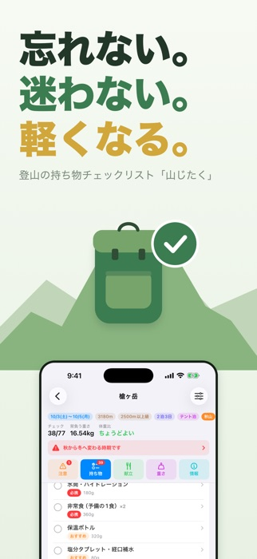
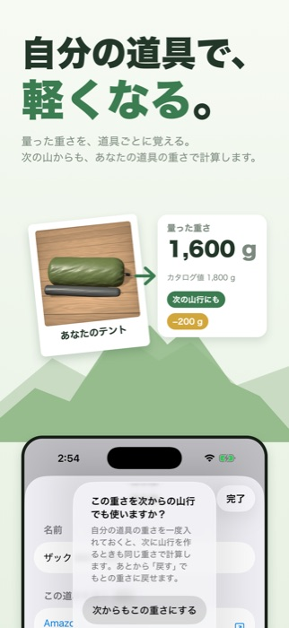
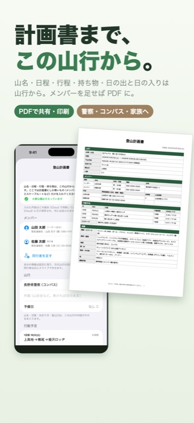
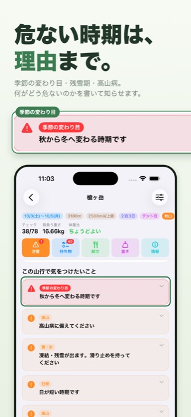
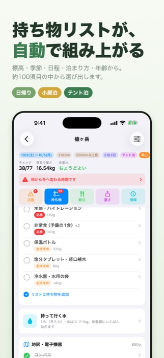
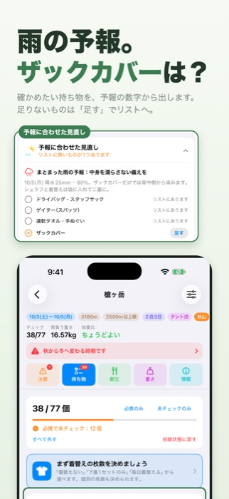
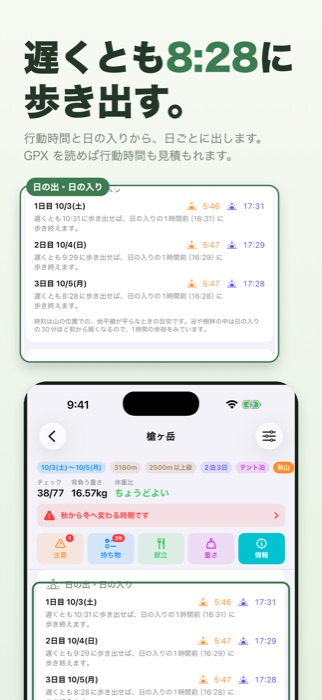
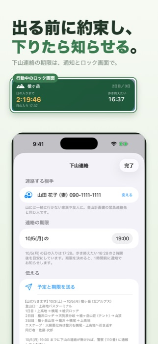
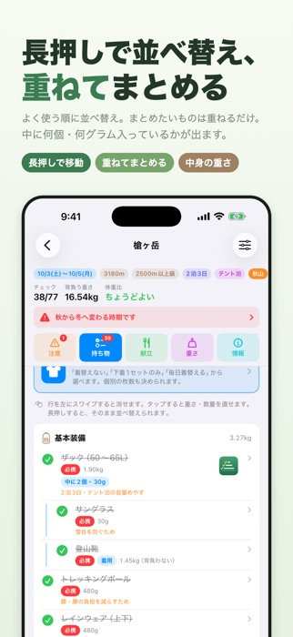
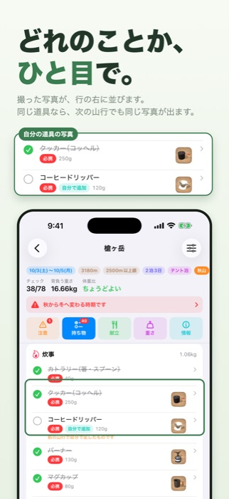

A hiking packing checklist. What you carry changes with altitude and season.
Download on the Japanese App Store (free)
An app that answers “This season, this mountain — what should I bring?” Enter the altitude of the mountain you are climbing and the date, and it builds a packing list that fits those conditions. From day hikes up to long traverses of 9 nights and 10 days. For iPhone and iPad; free, no sign-up.










In the same November, low mountains are still in autumn while 2,500 m peaks are already in midwinter. Yamajitaku keeps its own seasons for each altitude band, and changes what you carry depending on whether that mountain, on that day, is in spring, summer, autumn or winter.
Yes. There are no in-app purchases, and no ad SDK is included.
Item details and a few other places have links to search results on Amazon, Rakuten Ichiba and Yahoo! Shopping. A referral fee may be paid if you buy something through them, so they are labeled “広告” (advertising) in the app.
Yes. You can freely add and delete items and fix their names and weights. You can add items in each category, and register items you type in yourself. Even if you change the conditions and rebuild the list, the items you have changed yourself stay as they are.
Yes. Enter its name and altitude by hand, and the altitude band is set automatically from the altitude. You can pick 296 peaks from the list, centered on Japan’s 100 Famous Mountains (Nihon Hyakumeizan) and the 200 and 300 Famous Mountains lists (search by name, kana reading or region).
YAMAP and Yamareco (Japanese hiking services) offer no public way to send plans in from outside, so there is no direct link. Instead, you can export the plan and packing list as text and paste it as is into a YAMAP activity journal, a Yamareco trip record or plan, or the notes field of Compass (an online climbing-plan service). You can also export GPX (with the mountain’s location as a waypoint).
The plan you make can be taken out as a PDF and as text. Use it in whatever way the place you submit to accepts it: paste the text into the form on the online service Compass, email it to the prefectural police, or print it and drop it in the box at the trailhead. It is also reassuring to give the same plan to your family or workplace. The names and contact details you enter are saved only on your device (and in your own iCloud) and are never sent to the developer.
Yes. It has a layout made for iPad and works in landscape too. With the same Apple Account, iCloud keeps it in step with your iPhone.
Anything from a day hike up to 9 nights and 10 days. For 4 nights and 5 days or longer, it tells you that food and fuel are being counted on the assumption you carry all of it, and shows how hut meals and hut shops could reduce that. This is because the longer the traverse, the further the weight check drifts from reality if the plan still has you carrying everything.
It is in preparation. This page will say so once it is on Google Play.
If iCloud sync is on, just sign in with the same Apple Account on the new device and everything will be there. You can also export a backup from the app’s settings. Save the exported file anywhere — iCloud Drive, Google Drive or OneDrive — and restore it on the new device with “Load from backup” (バックアップから読み込む).
Check that notifications are turned on in the device’s Settings → 山じたく (Yamajitaku) → Notifications. In the app, also check that “Notify the day before” (前日に知らせる) is on under Settings (設定) → Before-departure reminders (出発前の知らせ). Turning it off stops all the other reminders too, including the check-in deadline and the turnaround time. The same section lists the scheduled reminders with their dates and times. The day-before reminder is sent for trips that start tomorrow or later. The reminder one hour before the check-in deadline comes on the day you come down, and the turnaround reminder at that time on the day you head for the summit (if you have set a deadline or a time).
Yamajitaku collects no information that identifies you. It contains no ad SDK, no analytics and no tracking. See the privacy policy for details.
Questions, bug reports, requests and mountains you would like added are all welcome.